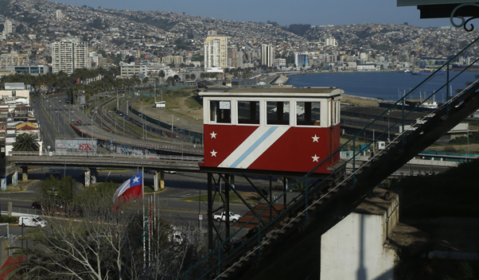
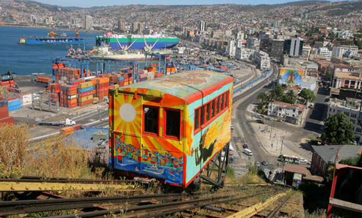

Os ascensores são elevadores que foram, em sua maioria,construídos entre o final do século XIX e o início do século XX. Eles são elevadores verticais que eram usados como meios de transporte. Alguns ainda funcionam, mas para andar em um deles pode custar de 100 à 300 pesos chilenos, o que dá de R$0,62 e R$1,86. Existem 16 elevadores no total, a experiência vale a pena e a vista é bem bonita.

